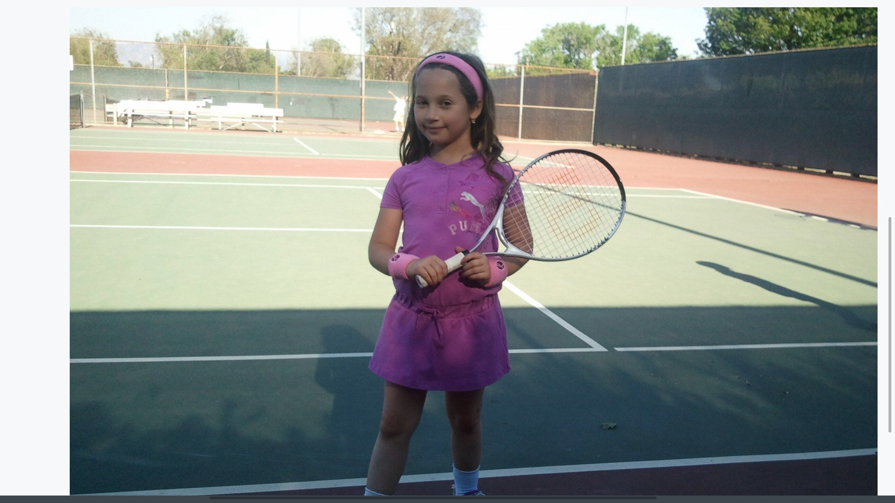
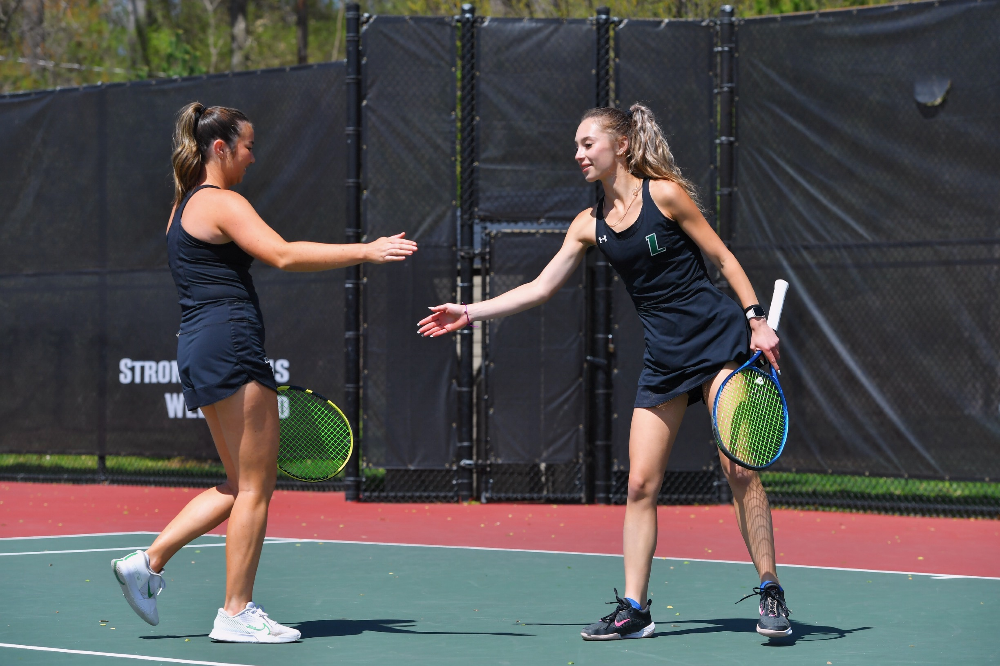
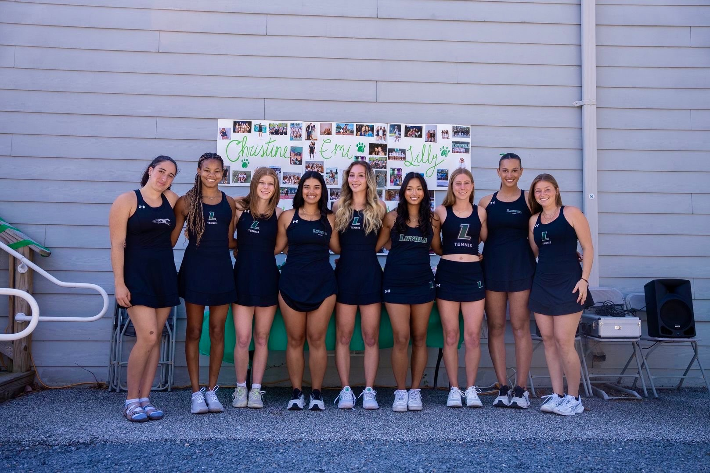
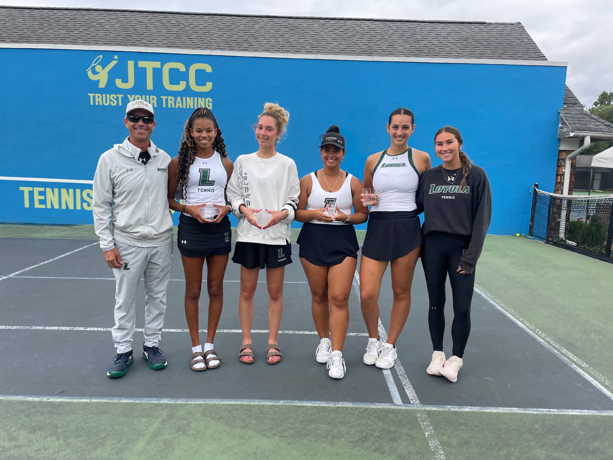
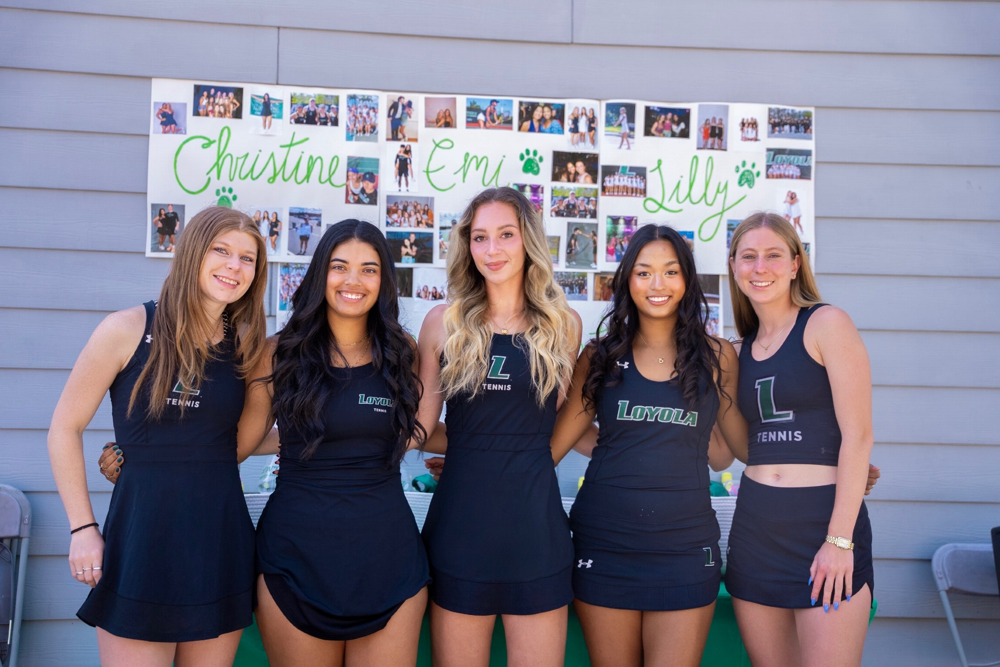
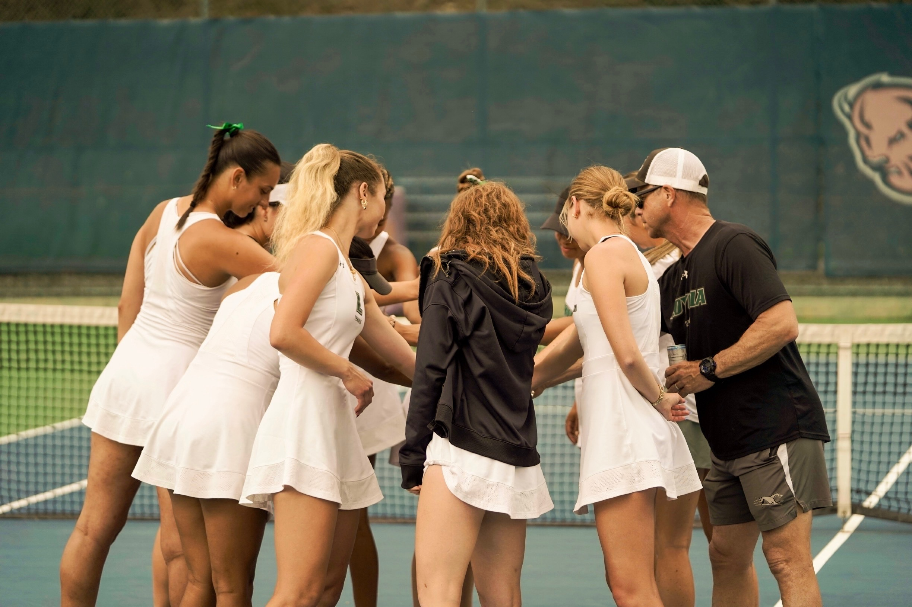

Memorable Moments
These photos show different parts of my tennis journey, from starting the sport when I was younger, age 6, to competing in tournaments and playing college tennis. I officially finished my college tennis career in April 2026, at age 22. Looking back, tennis gave me some of my best memories, funniest travel stories, and closest friendships.
Starting Young

Starting tennis at a pretty young age helped me build a love for the sport and develop confidence on the court. I started playing at a local recreational park near my house and fell in love with the sport. There was something exciting about making a ball over the net, even if it did not always go where I wanted it to.
College Tennis

Competing at the college level challenged me physically and mentally, while also teaching me time management. This picture is of me and my doubles partner for two years, Olivia Tracey. Olivia is now the assistant coach of LWT. We spent so much time together on court that we could basically communicate with one look during matches.
Team Memories

Being part of a team taught me commitment, responsibility, and the importance of supporting others. Over the past four years, I was fortunate enough to meet and become friends with such amazing women. I am still close with seniors who graduated my freshman and sophomore year. This picture is from my class senior day in April of this year. I love Loyola Women's Tennis!
Travel & Competition

Traveling for tournaments created some of my favorite memories and allowed me to compete against many talented players. Some trips were exhausting, but they also brought the best bus rides, random team snacks, and funny moments that made the long weekends worth it.
Senior Night

Senior night represented an important milestone in my college tennis journey and reflected years of hard work and dedication. It was emotional to realize how quickly four years went by, but it also made me proud of everything I had been through.
Team Support

One of the most valuable parts of tennis has been the relationships and support systems built through being part of a team. Tennis can feel individual during a match, but having people cheering for you from the next court makes a huge difference.